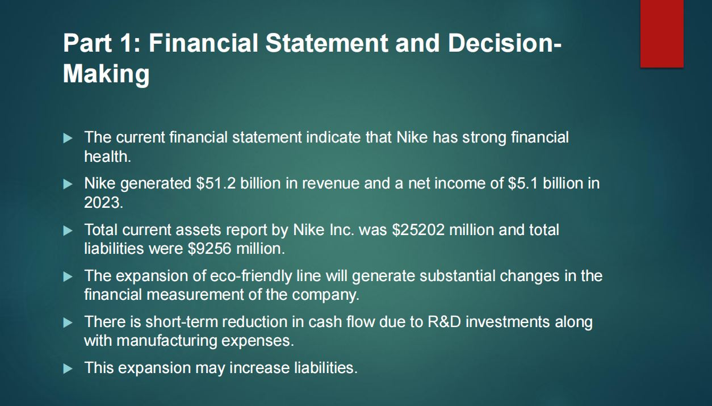

Business administration · Financial analysisFebruary 2025
Financial Statement & Expansion Analysis
This business analysis project examined Nike and reviewed key financial information to better understand company performance and potential expansion considerations.
The analysis considered reported revenue, net income, workforce scale and the wider business context. Figures are presented as part of the original project work and should be checked against the company’s latest filings before reuse.
Tools and focus: Financial statements · Business analysis · Strategy
Back to portfolio
